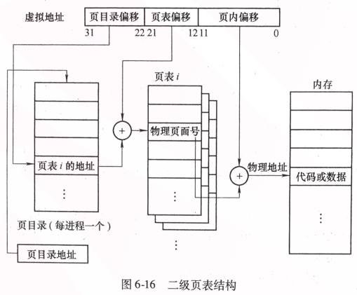
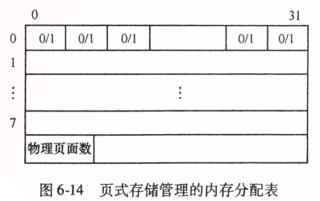

虚拟页式存储管理方案到底是什么
Table of Contents
本篇文章根据广东自考《操作系统》一书中的虚拟也是存储管理方案进行记录。
虚拟页式存储管理方案是现代操作系统常见的一种管理内存的方案。其特点是可以充分利用内存空间，又能减少移动内存块所花费的开销。
虚拟存储技术
虚拟存储技术引入了 “虚拟内存” 的概念，其利用大容量的外部存储（例如磁盘，SSD）来扩充内存，以达到一个有限的实际内存空间大得多的，逻辑的虚拟内存空间。
想要实现虚拟内存技术必须具有一下硬件的支持：
- 系统有足够大的外存
- 系统有一定容量的内存
- 最重要-硬件提供了实现虚-实地址映射的机制
工作原理：进程运行时将部分需要使用的程序装入内存，另一部分留在外存；当要执行的指令不在内存时，系统根据算法从外存调入内存继续进行工作；当没有足够的内存空间时，系统根据算法部分暂时不使用或优先级较低的内存块放置到外存，并释放内存控件供其他进程使用。
虚拟存储技术与交换技术的不同在于，交换技术是在换回内存时是将整个进程所需的内存放置内存区块，倘若这个进程大小比当前物理硬件内存大小更大，那么就无法放回。但是虚拟存储技术每次放回是按页为单位放回的，这种方式就不存在过大无法放回的问题。
虚拟页式存储管理
存储管理部件将内存划分成大小相等的许多区，称为“物理页面”，是一种可参与内存空间分配的物理单位，同时也要求程序中的逻辑地址也进行分页，页的大小与物理页面的大小一致。 逻辑地址的分页可称为虚拟地址。
程序所使用的虚拟地址由 虚拟页号和页内地址组成。
物理内存的分配与回收
页式存储管理器分配内存空间以物理页面为单位，且由于物理页面是硬件内存，所以是固定容量的。
那么在分配内存时仅需要指出哪些物理页面已经分配，哪些未分配以及当前剩余的空闲物理页面数即可。
通常使用 位示图 表示内存分配表。
此表是可分配区，假设被划分为256个物理页面，256个物理页面可以划分为8个字，每个字长可存储32位的数据。 字长中的每一位的值都可以为0/1，0表示对应的物理页面为空闲，1则表示为占用。
系统初始化时，此表为改变，添加了系统所占用的物理页面，需要将其占用物理页面设置为1，其他位置为0，这些为0的位也就是剩余空闲页面数，也就是可被分配的内存。
- 分配 当分配时，首先会查看此表的可分配内存是否足够，若不满足则不分配，若满足，则从此表找到值为0的位并修改为1表示占用，随后根据下面的位计算得出对应的物理页面号。 物理页面号 = 字号 * 字长 + 位号 分配完物理页面（内存）后就可以将程序装入对应物理页面号的物理页面中，并为其建立页表。
回收 当进程因某些情况执行结束，则需要回收其所占用的物理页面。 首先根据归还的物理页面找到物理页面号计算出其所对应的内存分配表中对应的位置，随后将占用状态设置为0，表示其原本占用的物理页面为可分配。
设归还的块号为i，通过下面公式可以得到其在物理页面（内存）分配表中对应的位置：
字号 = [i/字长] 位号 = i mod 字长
虚拟页式存储地址转换过程
前一节提到，分配内存时需要建立对应的页表，此页表用于恢复现场信息，页表所提供的信息被保存在系统的地址映射机制中的寄存器中，其被保存在对应进程的进程控制块内，其包含的信息有所在内存的起始地址和长度。
页式存储管理的地址转换
同样的，页表也许需要单独由硬件驱动的页表控制寄存器，分别是页表始址寄存器和页表长度寄存器并且还需要CPU的高速缓冲存储器支持。
某个进程运行时，对应页表的首地址和长度会被分别保存在页表始址寄存器和页表长度寄存器中。
页表主要的功能有两点：
- 指出页号与其所占的物理页面号之间的关系。页表的长度由程序拥有的页面数决定。
- 硬件进行地址转换的依据 执行指令时按虚拟地址中的页号查询到页表，若查询到的页表中没有对应的页号，那么则出现“地址错”中断事件，否则可通过页表获取对应的物理页面号，获取到物理页面号后就可以获取对应的物理地址： 物理地址 = 物理页面号*块长 + 页内地址
物理页面号 = 页帧 = 页框号
页式存储管理的地址转换关系图如下:

页表项
草他妈垃圾书，没有说页表项具体是干嘛的
页表项包含的内容：
- 物理页面号
- 有效位
- 访问位
- 修改位
- 保护位
其中访问位和修改位决定了置换哪个页面。
页表
多级页表
普通页表占用空间太大，所以有了多级页表，大多数操作系统都采用了二级页表，由页表页和页目录一起构成进程页表，结构如下：
- 散列页表 散列表表是可适用于地址空间大于32位的系统，其将页号为散列值，页表为散列页表，且表项中包含一个链表，链表中的散列值都指向同一个位置，且都包含三个字段：虚拟页号，映射的页框号，指向下一个元素的指针。
- 反置页表 反置页表中，每个物理页框对应一个表项，每个表项包含与该物理页框对应的虚拟页面地址，以及拥有该页面进程的信息。
转换检测缓冲区(TLB)
由 相联寄存器 实现的转换检测缓冲区，这个区域会存储当前访问最皮频繁的少数活动页面的页号。
有了TLB之后的地址转换过程。

有了TLB之后的转换过程： 存取数据时，根据数据所在逻辑页号找在TLB中找到对应的物理页面号，随后拼接页内地址，以形成物理地址； 如果没有在TLB中找到对应的物理页面号，那么就查询内存页表以得到物理页面号，随后将该块号填入TLB空闲单元内，若没有空闲则选择一行牺牲。
TLB计算虚拟地址转换成物理地址的平均访问时间： (访问内存时延 + 访问相连寄存器时延) * TLB命中率 + (内存访问时延 * 2) * 1-TLB命中率
缺页异常处理
当进程访问内存时发现所需的内存页面不存在，则触发缺页异常，那么将会保存现场信息，随后判断当前是否有空闲页面，如果有正常执行，若没有按照某种算法对某页以存在的页面进行置换，置换时要判断为外存中的页面是否被修改过，如果没有被修改则调入所需页面，若修改过中需要将修改写回外存的副本页面，随后再调入所需页面。
下面是缺页异常处理过程：
页面调度策略
页面调度有三种需要调度的，分别是调入、置页和置换。
- 调入策略
调入策略决定页面合适从外存调入内存中。分为两种方式：
- 请求调页(Demand Paging) 仅在发生缺页时才进行调入页面。
- 预调页 基于局部性原理的一种方式，同样是在发生缺页时才调入，不过会连同相邻的页面一起调入。
置页策略 书中就一句话，我也不知道咋说了。。。照抄吧。
当线程产生缺页时，内存管理器还必须确定将调入的虚拟页放在物理内存的何处。用于确定最佳位置的一组规则称为“置页策略”。
- 置换策略